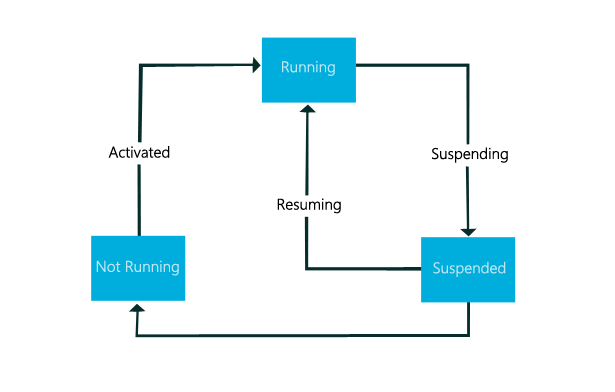
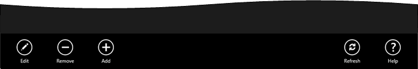
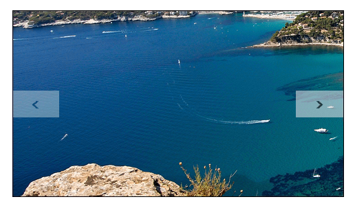
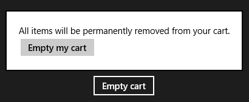
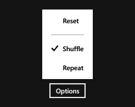
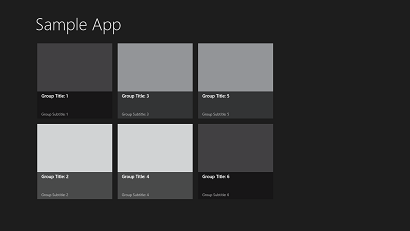
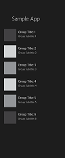
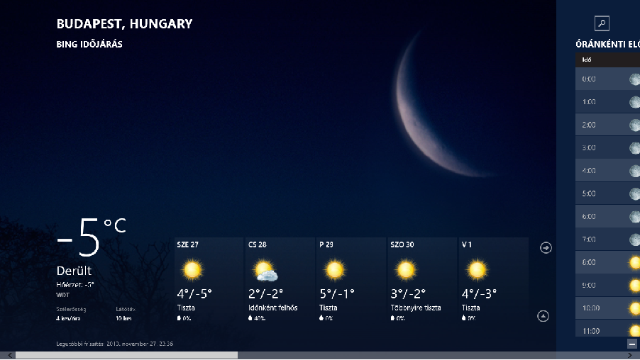

Eseményvezérelt alkalmazások fejlesztése 2.
11. gyakorlat - WinRT alapjai .NET környezetben
- Napjainkra a PC-s világ szegmense a piacon elkezdett összezsugorodni, már egyre kevesebb otthoni számítógépet adnak el. Ez a mobil eszközök elterjedésének következménye, ami egyszerre jelentkezik a okostelefonoknál, tablet-eknél, illetve a különbözõ hibrid megoldásoknál.
- De nemcsak a hardverek iránti igények változtak meg, hanem a szoftverek oldaláról is nagy változások történtek. Sok szempontból kellett változniuk ahhoz, hogy implementálni lehessen ezekre az új eszközök: ergonómia szempontból fel kellett készíteni õket az új beviteli eszközök kezelésére, további optimalizálásra volt szükség ahhoz, hogy a kevésbé erõs hardvereken is futni tudjanak, illetve energiahatékonyság szempontjából is hatékonyak legyenek.
- Az Apple és a Google sikerét látva a Microsoft (sajnos eléggé késõn ...), hogy belép a mobil eszközök piacára és a teljes termékkínálatát az új igényekhez próbálja igazítani. Ez sikerült is a Windows 8 segítségével, ami bevezette az új Modern felhasználói felületet.
- A Windows 8-al együtt egy elég szigorú tervezési irányvonalat adott ki a Microsoft ahhoz, hogy az eladásra szánt szoftverek kezelõfelülete illeszkedjen a már meglévõ operációs rendszerhez, ergonomikusan egyszerûen kezelhetõ legyen (leginkább mobileszközökön ...). Ezeket az irányelveket innen lehet elérni: http://design.windows.com, illetve innen.
- Lényegében öt alapelvet kell betartani minden Windows Store App fejlesztõnek, ahhoz, hogy a követelményeknek megfeleljenek:
- Show pride in craftsmanship ("Legyünk büszkék a szaktudásunkra"): Ügyeljünk az alkalmazásunk megbízhatóságára és biztonságosságára, próbáljunk meg minél szélesebb rétegeket elérni a felhasználók körében, azaz legyen minél egyszerûbb az alkalmásunk kezelése.
- Be fast and fluid ("Legyen gyors és gördülékeny"): Legyen a programunk felülete gyors (ezt nagyon komolyan is veszik), de könnyen kezelhetõ (egyszerre gesztusokkal, billentyûzettel vagy egérrel) és intuitív (hiszen szeretnénk ha a felhasználóink minden nap használnák).
- Be authentically digital ("Legyél hitelesen digitális??"): Ez az elv arra szeretne utalni, hogy próbáljunk meg kilépni a fizikai világ adta korlátokból. Használjuk ki teljesen a digitális tartalomban rejlõ lehetõségeket: pl. egy hírolvasó app ne csak szöveget legyen képes megjeleníteni, hanem animációkat, videókat stb.
- Do more with less ("Tegyél többet kevesebbel"): Sokat tehetünk azzal, ha az applikáció design-ját minimálisra csökkentjük és kivesszük az olyan elemeket, amik elvonják a felhasználó figyelmét. Ezzel azt érhetjük el, hogy a felhasználó csak a tartalomra figyel, egybõl megkapja a szükséges információt ezzel is idõt takarítva meg. A mellékes funkciókat rejtsük el, és csak akkor jelenítsük meg õket, amikor a felhasználónak tényleg használni is akarja (pl. menüsor és AppBar közötti különbség).
- Win as one ("Gyõzzünk egyként"): Csökkentsük a redudanciát a felületen is, mûködjünk együtt más applikációkkal is, törökedjünk a konzisztenciára (támaszkodjunk a saját eszközeinkre, sablonjainkra stb.).
- A Windows két API-t kínál a Windows Store applikációk készítésére: a Windows Runtime (WinRT) és a Windows Library for JavaScript. A kurzus során az elõbbivel fogunk megismerkedni és azon belül is maradunk a C# és XAML párosításánál.
- A WinRT egyszerre támogatja a C++/CX (a Microsoft kiterjesztett C++ nyelve, amit direkt a WinRT programozására fejlesztettek ki), illetve a különbözõ menedzselt nyelvekben úgymint a C# és a Visual Basic.NET. A Windows Library for JavaScript segítségével pedig JavaScript és TypeScript-ben lehet applikációkat készíteni.
- A WinRT elsõdleges feladat, hogy leváltsa a már eléggé koros Win32 API-t. Egy másik nagy elõnye az API-nak, hogy a managed nyelven írt programok végre közvetlenül képesek elérni az API szolgáltatásokat, illetve a programkódok már natívan futnak. Ezért is tudunk egyszerre C++-ban vagy C#-ban alkalmazást fejleszteni.
- Ezeknek a változásoknak megfelelõen kicsit a háttérban kicsit máshogy futnak a .NET Framework alatt írt programjaink, ha WinRT API akarjuk használni.
- Az asztali alkalmazásoktól eltérõen, más életciklussal mûködnek a Windows Store alkalmazások. Ezt leginkább a sebesség és energiahatékonyság megõrzése céljából vezették be:

- Habár a két technológia nagyon hasonló (lényegében a WinRT a WPF továbbfejlesztett utódja), elég sok változás történt:
- Legegyszerûsítették lett az adatkötést. Jelenleg nincs lehetõség megmondani explicit, hogy mikor frissüljenek a kötött értékek.
- A RelativeSource megadása is nagyon leegyszerûsödött: csak önmagához (Self) és a sablon szülõjéhez (TemplatedParent) lehet kötni, viszont a visual tree-n nem lehet lépkedni.
- Nincsenek (egyelõre) trigger-ek, így más trükkökkel és megoldásokkal kell a felhasználói interakciókra reagálni. Erre szerencsére a WinRTTriggers nevû könyvtár megoldást jelenthet: http://winrttriggers.codeplex.com/
- Mivel elég szigorú megkötések vannak az alkalmazások megjelenítésére, ezért a saját template-k se használódik ki annyira, mint a WPF-nél (persze ez csak szubjektív vélemény).
- Ablakok helyett oldalak vannak definiálva a WinRT-ban, amik leginkább a webes világból ismertek. Ennek megfelelõen lehetõség van a lapok között is navigálni.
- A Windows Store alkalmazások mûködését legegyszerûbb úgy felfogni, mint amik weboldalak lennének. Ablakok helyett úgynevezett Page objektumok vannak, amik között lehet navigálni. Ezzel egy hiearchiát kell felépítenünk a programunkon belül. Használata nagyon egyszerû (hacsak nem MVVM mintát használunk, mert ott kicsit bonyolódik a dolog):
MainPage.xaml
<Button Click="GoToInformationPage"
Grid.Column="1"
HorizontalAlignment="Right"
Content="Információ" />
MainPage.xaml.cs
private void GoToInformationPage(object sender, RoutedEventArgs e)
{
//Lekérjük az aktuális frame-et
var frame = this.Frame;
//Majd elnavigálunk a nekik szükséges oldalra.
//Látható, hogy nem referenciát kell átadnunk, hanem az oldalunknak a típusát
//Ez is jelzi azt, hogy az oldalon eddig tárolt állapotok (hacsak nem gondoskodunk róluk)
//el fognak veszni, és az adott Frame-ben egy új lap generálódik a memóriában:
//az ahova navigáltunk
frame.Navigate(typeof (InfoPage));
}
- A Microsoft által megadott tervezési irányvonalaknak megfelelõen kicsit változtak a rendelkezésünk álló layout-ok és vezérlõk is. Jelenleg ezek a panelek hiányoznak a Windows Store életébõl: DockPanel, UniformGrid (idõvel remélhetõleg belekerülnek ...). Csak kivételes esetekben használjuk a Canvas-t, mivel az abszolút pozicionálás (amit õ is használ), teljesen ellentmond a Microsoft irányelveivel.
- Új vezérlõk is jelentek meg, amik leginkább az ujjal történõ vezérlést hivatottak megkönnyíteni. Fontos, hogy a Windows 8 és 8.1 között fejlesztõi szempontból nagyobb változások is történtek UI szinten: olyan új vezérlõk jelentek meg, mint a Hub, Flyout, MenuFlyout.
- A vezérlõket ugyanúgy, mint WPF-ben XAML segítségével rendezhetjük el a felületen. A WinRT felfogható a WPF utódjának is, hiszen ugyanazok a fejlesztési elvek jelennek meg mindkettõben: válasszuk szét az alkalmazás megjelenítését és üzleti logikáját Model-View-ViewModel architektúra segítségével. Sajnos performancia meggondolások (és valószínûleg idõhiány miatt), rengeteg WPF-ben látott lehetõség nem került implementációra, így a jól megszokott megoldások helyett kerülõutakon kell megoldani egyes dolgokat.

- Egy eszköztár, ami az alkalmazásspecifikus parancsokat tárolja. Gesztúrákkal, illetve billentyûzettel (Windows gomb + z) lehet elõhívni. A menü leváltásra egy nagyon jó megoldás lehet.
<Page.BottomAppBar>
<AppBar x:Name="bottomAppBar" Padding="10,0,10,0">
<Grid>
<StackPanel Orientation="Horizontal" HorizontalAlignment="Left">
<Button Style="{StaticResource EditAppBarButtonStyle}" Click="Button_Click"/>
<Button Style="{StaticResource RemoveAppBarButtonStyle}" Click="Button_Click"/>
<Button Style="{StaticResource AddAppBarButtonStyle}" Click="Button_Click"/>
</StackPanel>
<StackPanel Orientation="Horizontal" HorizontalAlignment="Right">
<Button Style="{StaticResource RefreshAppBarButtonStyle}" Click="Button_Click"/>
<Button Style="{StaticResource HelpAppBarButtonStyle}" Click="Button_Click"/>
</StackPanel>
</Grid>
</AppBar>
</Page.BottomAppBar>
A Windows 8.1 újabb AppBar specifikus vezérlõkkel egészült ki: AppBarButton, AppBarSeparator, AppBarToggleButton

- A FlipView egy érdekes vezérlõ. Több elemet (vezérlõt) képes kezelni, de egyszerre csak egyet tud megjeleníteni. Leginkább képnézegetéssel szokták demózni, de nagyon sok mindenre használható: pl. különbözõ lapok közötti "navigálásra", hiszen bármilyen vezérlõt bele lehet tenni.
<FlipView x:Name="flipView1" SelectionChanged="FlipView_SelectionChanged">
<Image Source="Assets/Logo.png" />
<Image Source="Assets/SplashScreen.png" />
<Image Source="Assets/SmallLogo.png" />
</FlipView>

- Újabb Windows 8.1-es vezérlõ, aminek a szerepe az, hogy olyan üzeneteket jelenítsen meg vezérlõkhöz, amik valamilyen felhasználói interakcióra várnak. Igazából a popup window-oknak egy alternatív megoldása Windows Store stílusban.
<Flyout>
<StackPanel>
<TextBlock>All items will be permanently removed from your cart.</TextBlock>
<Button Click="DeleteConfirmation_Click">Empty my cart</Button>
</StackPanel>
</Flyout>

- Nemcsak egyszerû flyout van, hanem lehetõség van menüszerû elrendezésben is felsorolni a felhasználói interakciókat.
<MenuFlyout>
<MenuFlyoutItem Text="Reset" Click="Reset_Click"/>
<MenuFlyoutSeparator/>
<ToggleMenuFlyoutItem Text="Shuffle"
IsChecked="{Binding IsShuffleEnabled, Mode=TwoWay}"/>
<ToggleMenuFlyoutItem Text="Repeat"
IsChecked="{Binding IsRepeatEnabled, Mode=TwoWay}"/>
</MenuFlyout>

- Egy ListBox-hoz hasonló megoldás, ahol az elemeket nem függõlegesen, hanem vízszintesen rendezzük el, ezzel is kihasználva a szélesképernyõs eszközeinket. A felhasználónak lehetõsége van rá, hogy a felsorolt elemeket átrendezze, csoportosítsa, ami interaktívabbá teheti a felületünket. Hasonló megoldást láthatunk a Start képernyõn.
<GridView x:Name="gridView1" SelectionChanged="GridView_SelectionChanged">
<x:String>Item 1</x:String>
<x:String>Item 2</x:String>
</GridView>

- A ListView a GridView és a ListBox párosításának feleltethetõ meg, de vízszintes elrendezés helyett, inkább függõlegesen helyezi el az elemeket. Nincs is lehetõség csoportosítani az elemeket, de ettõl függetlenül a felhasználó még mindig újrarendezheti az elemeket.
<ListView x:Name="listView">
<x:String>Item 1</x:String>
<x:String>Item 2</x:String>
</ListView>

- Talán a grafikus felületek tervezésének legnehezebb része, hogy hogyan rendezzük el a felületi elemeket úgy, hogy azok könnyen hozzáférhetõek lehessenek, de ne akadályozzák a felhasználó munkáját. A Hub erre kínál egy intuitív megoldást, úgy, hogy a képernyõt vízszintesen különbözõ szekciókra osztja (HubSection) és azokat modulárisan jeleníti meg. Ezzel a technikával kihasználjuk a képernyõ teljes szélességét, és a lefele gördítés helyett oldalirányba történik az egész. Legjobb példa erre az Idõjárás applikáció.
<Hub>
<HubSection>
<!--- Szekció tartalma -->
</HubSection>
<HubSection>
<!--- Másik szekció tartalma -->
</HubSection>
</Hub>
[ Köszönöm a figyelmet! ]
{kind=link}
{kind=link}
{kind=link}
{kind=link}
{kind=link}
{kind=link}
{kind=link}
{kind=link}